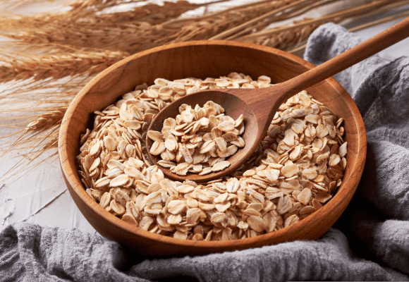
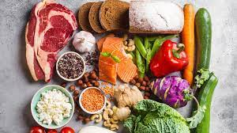
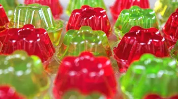

...você está acessando o portal de nutrição que mais cresce no Brasil! Aqui você encontrará inúmeras páginas com conteúdos, dicas nutricionais, artigos, notícias, curiosidades, tabelas de alimentos, jogos on-line e muito mais
tipos de comidas que vamos abordar



aprenda a comer um café da mahnhã mais saudavel e a utilidade de graos tem no seu corpo que pode te beneficiar
aprenda a montar um parto mais saudavel que vai te deixar mais satisfeita
tenha uma dieta mais nutritiva e deliciosa